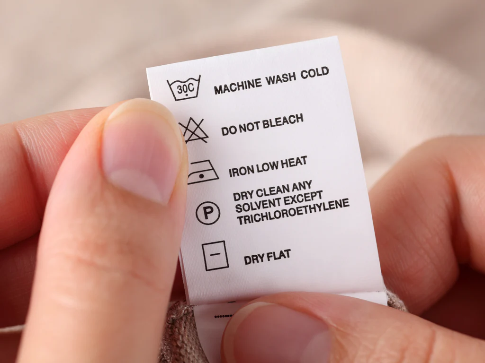

×
Secretos de Guardarropa: Cómo cuidar tus prendas favoritas

Invertir en buena ropa es solo la mitad del trabajo; la otra mitad consiste en saber mantenerla. Pequeños errores al lavar, secar o colgar las piezas pueden desgastar los tejidos, alterar los colores o deformar las siluetas. Aplica estos tres consejos profesionales para prolongar la vida útil de tu clóset:
🧼 El arte del lavado inverso
Antes de meter tus pantalones de mezclilla, playeras con estampados o prendas oscuras a la lavadora, voltéalas al revés. Esto evita que la fricción directa con otras telas gaste los colores y protege las texturas exteriores del desgaste prematuro.
💨 Cuidado con el calor extremo
El uso excesivo de la secadora caliente es el enemigo número uno de las fibras elásticas y el algodón. Siempre que sea posible, opta por secar tus prendas colgadas a la sombra. Si usas secadora, selecciona ciclos de temperatura baja o aire frío para evitar que la ropa se encoja.
📌 El colgado correcto
Los suéteres tejidos y las playeras pesadas nunca deben guardarse en ganchos, ya que el propio peso de la tela terminará estirando los hombros y deformando el cuello. Es mucho mejor doblar estas piezas y guardarlas en repisas o cajones.
Con estos simples hábitos notarás de inmediato cómo tus conjuntos retienen su textura, brillo y ajuste original por temporadas completas.